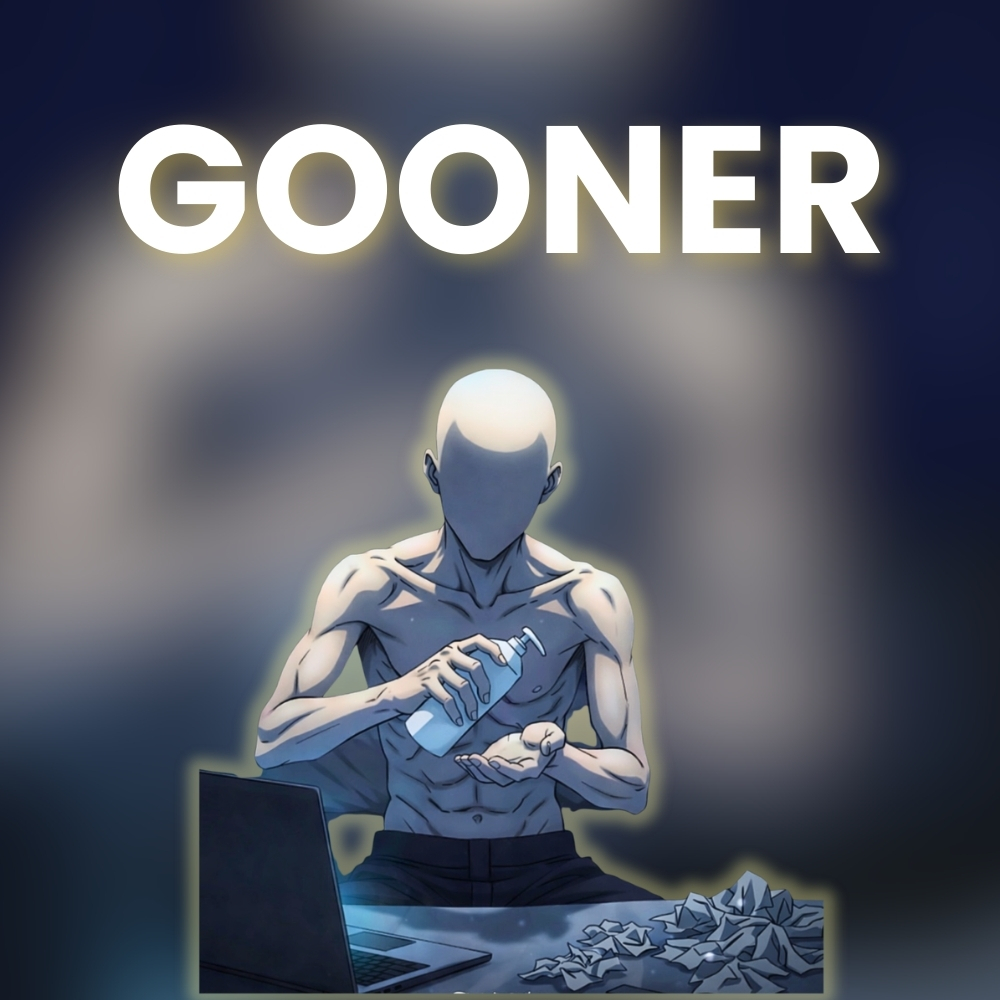

There is a war. Markets collapsing. Headlines escalating.
But you still wake up every morning with lube.
The timeline scrolls endlessly. Crypto charts flash red. Missiles trend on the news feed.
And yet the gooner remains focused on the only chart that matters: dopamine.
Stop being a gooner.
Select symptoms:
Study Finds Traders Scroll 42km Of Timeline Per Year
Researchers discovered the average crypto trader scrolls the
height of Mount Everest in Twitter timelines annually.
Global Crisis Fails To Interrupt Gooning Activity
Despite escalating geopolitical tensions,
analysts confirm terminal gooners remain online.
Gooner represents the terminally online participant.
Doomscrolling wars. Trading meme coins. Chasing dopamine.
The scroll never stops.
But maybe you should.